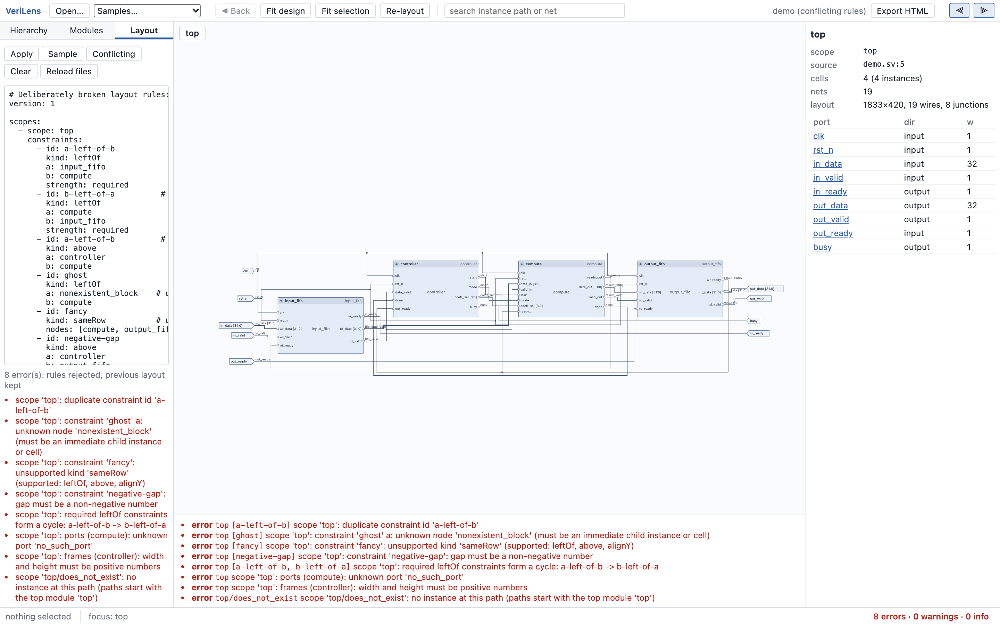

Layout DSL (YAML, version 1)
A small, versioned YAML file that says how a design should be arranged without touching what it is. Three constraint kinds, two per-node tweaks, a defaults block. Everything else is automatic.
Shape of a file
version: 1
defaults: # optional
nodeGap: 32 # vertical gap between nodes in a layer (world units)
layerGap: 80 # minimum horizontal gap between layers
direction: right # the only value accepted today
routing: orthogonal # the only value accepted today
scopes: # one entry per module *instance* you want to influence
- scope: top/compute # hierarchical instance path, starting at the top module
constraints: [ ... ]
ports: [ ... ]
frames: [ ... ]Everything is addressed by instance path, not module name: top/compute and a second instance top/compute2 are separate scopes even if both are the same module. Node names inside a scope are the immediate children of that instance's module: instance names such as pe0, or generated operator cells such as $add_5 (visible in the inspector). module: is accepted as an alias for scope:.
Constraints
constraints:
- id: pe-chain # ids are unique within a scope
kind: leftOf # right(a) + gap <= left(b)
a: pe0
b: pe1
gap: 60 # world units, default 0
strength: required # required | preferred (default required)
- id: ctl-up
kind: above # bottom(a) + gap <= top(b)
a: controller
b: compute
gap: 40
strength: preferred
weight: 5 # preferred rules are applied heaviest first
- id: row
kind: alignY # equal vertical centers
nodes: [input_fifo, compute, output_fifo]
strength: preferred
weight: 10| Kind | Meaning | Notes |
|---|---|---|
leftOf | right edge of a plus gap is at or before the left edge of b | Also feeds the layering step: a required leftOf against the signal flow turns the conflicting wire into a feedback route instead of failing. There is no rightOf; swap a and b. |
above | bottom edge of a plus gap is at or above the top edge of b | Solved by pushing b down or, if that breaks another rule, pulling a up. No below; swap a and b. |
alignY | all listed nodes share one vertical center | Two or more distinct nodes. Nodes in the same layer cannot share a center without overlapping, so the rule is reported as relaxed. |
Required versus preferred
- Required rules must hold. If they cannot, that scope's layout fails: the status bar turns red, the diagnostics drawer names the scope and the rule id, and the previous valid layout stays on screen. Nothing is silently dropped.
- Preferred rules are tried heaviest
weightfirst and kept only if they break neither a required rule nor a heavier preferred rule that is already satisfied. Each one still violated afterwards is reported as a warning with the remaining distance in world units.
Port order
ports:
- node: compute
side: west # west | east | north | south
order: [data_in, valid_in, start, mode] # top-to-bottom on west/east, left-to-right on north/southUnlisted ports follow in declaration order. By default inputs sit on the west side and outputs on the east; listing a port under another side moves it there.
Frames
frames:
- node: compute
width: 640 # includes the header and the internal viewport
height: 420Only expandable module instances take a frame. The frame is allocated at layout time and never grows: when expanded, the child's schematic is scaled to fit inside it. A large interior in a small frame will be too small to read inline; that is what Focus module is for. The default frame is 260 × 170.
Validation
A file is validated against the loaded design when applied, and every problem is reported at once with its scope and the rule ids involved:
- unknown scope path, unknown node, unknown port
- duplicate constraint ids, unsupported kinds (
sameRow,rightOf, …), unknown keys - invalid values: negative gaps, non-positive weights or frame sizes, bad strength
- cycles among required
leftOfrules or among requiredaboverules - a required
alignYthat contradicts a requiredaboveon the same nodes - frames on nodes that are not expandable instances
Any error rejects the whole file; nothing is applied partially. The bundled Conflicting sample triggers one of each.

How rules are applied
- Automatic layered layout computes a candidate (required
leftOfrules already influence which layer each node lands in). - Required rules are iterated to a fixed point by nudging: layers shift right for
leftOfgaps, nodes move vertically foraboveandalignY. Non-overlap is maintained. - Preferred rules are tried in weight order and kept or reverted.
- Wires are routed against the final geometry, never before.
- Everything is verified again and reported.
Rules only reach the immediate children of a scope. You cannot relate top/compute/pe0 to top/output_fifo because each module is laid out in its own coordinate system.
A worked example
The rule file shipped with the demo. It fixes the datapath order and spacing, keeps the three datapath blocks on one row, puts the controller above the compute block, gives compute a frame big enough to read inline, and orders its ports to match the data flow.
version: 1
defaults: { nodeGap: 32, layerGap: 80 }
scopes:
- scope: top
constraints:
- { id: input-before-compute, kind: leftOf, a: input_fifo, b: compute, gap: 80, strength: required }
- { id: compute-before-output, kind: leftOf, a: compute, b: output_fifo, gap: 80, strength: required }
- { id: datapath-alignment, kind: alignY, nodes: [input_fifo, compute, output_fifo], strength: preferred, weight: 10 }
- { id: controller-above-compute, kind: above, a: controller, b: compute, gap: 40, strength: preferred, weight: 5 }
ports:
- { node: compute, side: west, order: [data_in, valid_in, start, mode, coeff_sel, ready_in, clk, rst_n] }
- { node: compute, side: east, order: [data_out, valid_out, ready_out, done] }
frames:
- { node: compute, width: 640, height: 420 }
- scope: top/compute
constraints:
- { id: pe-chain, kind: leftOf, a: pe0, b: pe1, gap: 60, strength: required }
- { id: pe-row, kind: alignY, nodes: [pe0, pe1], strength: preferred, weight: 3 }The PipelinedCPU example has a second, larger rule file.